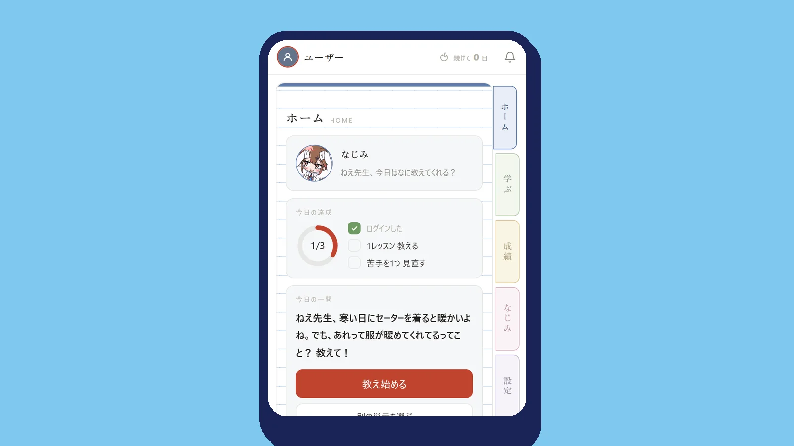

NEWS
一覧へ
ABOUT US
私たちについて
アプリと製品で、
探求心を育てる。
アプリや製品の開発を通じて、人それぞれの形の探求心を育てていきます。
仙台高専の学生団体です。メンバー3人は全員がエンジニア。そのうえで、代表・営業・事務と会計を、それぞれが受け持っています。
PICK UP
いまつくっているもの
BUSINESS
トワツの3つの活動
-

-
写真のお願い第6回 AI甲子園での発表の様子、または WasuFinder が動いている画面横長 3:2／画面ならスクリーンショットでOK AI開発とコンテストへの挑戦
第6回 AI甲子園「JOYFUL」で、公共交通機関での忘れ物を検知する AI「WasuFinder」を開発するなど、つくったものでコンテストに挑戦しています。
WasuFinder -
写真のお願いミルクラフトの活動の様子（地域の方と一緒に作業している場面など）横長 3:2／写っている方に、掲載してよいか確認してください
PHILOSOPHY
トワツの理念
VISION
「なぜ？」を楽しめる人が、
あたりまえにいる社会。
VALUES大事な三本柱
-
01
自分が、最初のユーザー。
不満と「面白そう！」から、すべてが始まる。まず自分が使いたいものをつくる。
-
02
価値は、
相手の変化量で測る。使う前と使った後で、相手がどれだけ変わったか。それが、つくったものの価値。
-
03
何よりも、経験。
調べるより、やってみる。やってみてわかったことを、いちばん大事にする。
WORKS
すべての作品を見る
トワツ作品展示会


BLOG
記事をすべて見る
日常リリースノート
PROFILE
トワツとは？
- 名称
- トワツ
- 形態
- 仙台高専の学生団体
- 目標
- 答えは探求心の中にある。その探求心の着火剤を創る。
- ビジョン
- 「なぜ？」を楽しめる人が、あたりまえにいる社会。
- 代表
- 上原 貫太
- メンバー
- 3名（代表・営業・事務・会計）
- 所在地
- 宮城県名取市
- 活動内容
- 学びのアプリの企画・開発（NajoshiteAI）
- AI開発とコンテストへの挑戦
- 地域とのものづくり
- 主な実績
- SPARK!TOHOKU 2026 東北総合通信局長賞を含む4冠
- 高校生ビジネスアイディアコンテスト2025 本選出場
- 第6回 AI甲子園「JOYFUL」出場（WasuFinder）
- 令和7年度 なとりこどもファンド採択（ミルクラフト）